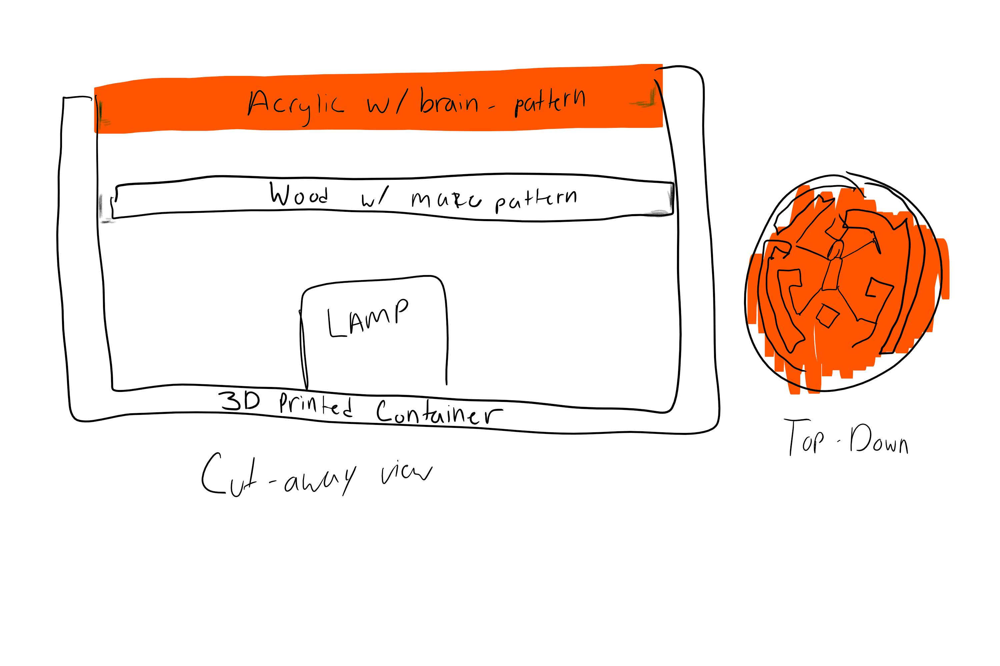

Assignment 7: Proposal
Westworld “Maze” Lamp
Laser Cut acrylic, set into a 3D printed base with patterned inserts
(Approximately 5” in diameter)
Based on a design that appears frequently in the HBO series, Westworld. Without spoilers, this design will mimic the pattern, while also incorporating a coexisting but contrasting design that mimics that design associated with the human brain, which embraces the concept of duality and consciousness that the show highlights.
The design will consist of a 3D printed cylinder that will contain a smaller cylinder for holding the lamp, and also include edges that two layers will rest upon to make the “shade”. The first layer will be wood (laser cut) that will contain the Westworld pattern. The second and final layer will also be laser cut, but with a pattern that more closely resembles the cortex of the human brain.
Tasks:
Design
Sketch Design
Complete pattern designs (Illustrator)
Westworld Maze
Cortex design
Testing
Design lamp body (container)
Include smaller holder for lamp
Include "lip" for "shades" that were previously designed
May use Grasshopper / Rhino
Fabrication
3D Print
Starting print (may take significant amount of time) before continuing with other fabrications
Laser Cutting
Cut pattern into acrylic
Cut pattern into wood
Assembly
Insert lamp into holder
Layer patterns into container
Timeline:
Bill of Materials: